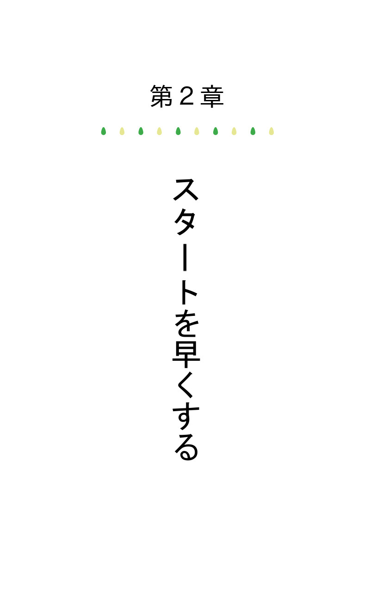

| 「すぐやる人」になるための習慣 | |
| 齊藤 誠 | |
| (2016) | |

目次
はじめに
第１章 思い立ったらすぐ行動
第２章 スタートを早くする
第３章 100 点満点を目指さない
第４章 早起きで人生が変わる
第５章 片付け習慣を身に付ける
第６章 メールの返信を早くする
第７章 事前準備の大切さ
第８章 支払いを早く済ませる
第９章 めんどくさいと思ったら
第10 章 アイデアが思いついたら即行動
第11 章 松戸市の「すぐやる課」
第12 章 行動力＋実行力＝成功力
あとがき
はじめに
本書を手に取っていただきありがとうございます。
この本は、すぐ行動に移した方がいいとわかってはいても何事後回しにしてしまってなかなか行動に移せないといった方に見ていただくために書きました。
「すぐやる人」になるだけで自分が変わります。
自分が変われば人生が変わります。
読みやすいように12
の章に分けてまとめました。
仕事でもプライベートでも「後まわしにする人」より「すぐやる人」の方が何ごともうまくいくということが多いように思います。
つまり成功する確率が格段に上がるのです。
かくいう僕もどちらかというと「後まわしにする人」に属するタイプの人間でした。子供の頃の夏休みの宿題はいつも最後の方になって慌てて宿題をはじめるといったありさまです。
待ち合わせしたっていつもギリギリ。仕事だって、メールの返信だって特別早いわけではなかったのです。
では、一体なぜこんな僕が「すぐやる人」になる方法についての本を出版することになったのか？
それは自分自身が今すぐにでも変わりたかったですし変われたからです。人はいつでもなりたい自分に生まれ変わることができます。
すぐ行動するというのをひたすら繰り返し習慣化してきて、今では思い立ったことを何ごともすぐやるという習慣が身についています。
そこで自分の身の回りで何かが変わっていくのがわかりました。
ゆっくり、ゆっくり少しずつですが絡まっていた歯車がかみ合うように。
今回「すぐやる人になる方法」を出版したのだって今すぐやるというのをこつこつ実行してきたたからこそのその結果です。
以前までの「後まわしにする人」であった僕のままだったら出版する、出版すると口では言っても結局出版するまでには至っていなかったことでしょう。
一言に今すぐやるといっても様々な今すぐやることがあります。
よし、今すぐやるぞ！と思い立ったのはいいものの一体何から、そしてどこまでやるべきなのかわからないう方もいることでしょう。
「すぐやる人」になるのが成功への近道ともいえます。成功とは何も大金を手にすることだけではありません。友達を作ることだって成功。ビジネスで出世することだって成功でしょう。恋人を作ることだって、婚活に成功することだって人によっては成功です。
人によって目的は違えど世の中には様々なカタチの成功が存在するのです。成功というのは困難な目的がなしとげられることをいいます。人はいつでも、今すぐにでも生まれ変わることができます。
さあ、「すぐやる人」になって新しい自分を発見してみましょう。
齊藤誠
「思い立ったが吉日」ということわざがあります。
何かをしようと決意したら、あれこれ考えずに即日実行するのが良いという意味です。つまり明日やらずに今日やろうということですね。
このようにことわざになっているほど重要なことですが、その日といわず思い立った後に即行動に移すというのが一番理想的です。
何か行動を起こす前にある程度考えるのももちろん大事なことですが、考え過ぎてしまうと思い立ってから行動するまでの時間のスパンが空いてしまうのでモチベーションを維持するのが難しくなってしまいます。
思い立ったらすぐ行動するのが良いとされる理由を見てみましょう。
-
行動しなければ成功も失敗もしない
-
行動すれば何が失敗するのかがわかる
-
行動することで実践に基づいた視点で考えることができる
-
行動の回転率が上がる
-
チャンスを掴みやすくなる
まず行動しなければ何も起きません。そして失敗もしません。人は失敗をすることで学ぶこともあるんです。
失敗したら次はこうしようと、同じ過ちをしないように修正することができます。これこそ失敗から得た経験です。
「失敗を恐れない」という言葉がありますが、それだとまだまだ失敗は怖いという言葉の印象を自分自身も受けてしまいます。
そこから一歩進んで「失敗を経験しておく
」という心構えを持つと自分の中の何かがふっきれるのかもしれません。
ゲームと違って人生は失敗したらゲームオーバーというわけではありません。極端な話死んでしまうわけではないのですから。
失敗＝駄目
なものというイメージがどうしてもつきまとってしまいますが、失敗をもっとポジティブなものとして考えることも大事なことなのかもしれません。
失敗したということは「修正できる」ということでもあります。たとえ失敗したとしても修正を繰り返していけばそれが次第に大きな力となるのでしょう。
思い立ったらすぐ行動するということは行動の回転率も上がります。前述したようにその分失敗する回数も増えますが、チャンスを掴みやすくもなります。
例えばホームランなんて打てないよという方でも、何度も何度もチャレンジすればいつかはホームランを打てるのも夢ではありません。
難易度の高いゲームだって1
回のプレイだとクリアは不可能でも何度も何度もチャレンジすればクリアできることだってあるんです。
今から変わることで、ビジネスだってプライベートだって成功する可能性が今までよりもぐっと近くなることでしょう。

スタートは早ければ早いほど良いです。思い立ったら「1
分後」、「30
秒後」、「休憩してから」と言わず今すぐ何かしらの行動に移すべきだと思います。
計画的に企画を練ることも大事です。でも、あれこれ企画を練ったり考えることでスタートが出遅れます。
場合によっては思い立った瞬間に行動に移すよりも1
か月遅れ、下手したら半年遅れのスタートとなることもあるでしょう。
そのうちスタートをきれるのならまだましです。あまりにも遅くなってしまうと場合によっては企画の段階で熱が冷めてしまって、断念することになってしまう可能性だってあります。
何ごともスタートの速さが肝心です。そうすることで心に余裕を持って取り組むことができるので良い結果が生まれやすくなるのでしょう。
確かに行動をすぐ起こすということはそれだけ失敗する可能性も高くなります。
ですが失敗を恐れず幾度もチャレンジすることで行動の回転率が上がります。行動をしながら学んで、軌道修正していけばいいのです。
このスタートがどれだけ早くきれるかというのが成功するための鍵を握ります。
ビジネスにおいて常に100
点満点を目指そうとする人がいます。
確かに60
点と比べれば100
点満点の方が誰だっていいに決まっています。理想は100
点満点ですしそうするべきだと考えている人も実際多いことでしょう。特に完璧主義の人こそそのような傾向があるように思います。
しかしそれを60
点で妥協すれば、全体の回転率が上がりますしスピード効率も増します。
今すぐやる人にグッと近づくことができるのです。
これを60
点満点と考えます
。100
点ではなく60
点で満点なんです。
世の中に溢れているありとあらゆるサービス、コンテンツを見てください。
ある程度値段のするサービスにだって非の打ち所がないほど完璧なサービスなんてあまり存在しないというのがわかります。
常に100
点満点でなければいけないという考えのままビジネスを進めていくといずれは疲れ果ててしまうでしょう。フリーランスやスタートアップで1人でビジネスを開始しているのなら尚更スピード感が必要です。
マラソンだって最初から全速力で走り続けるといずれはバテてしまいます。
例えば依頼主がクライアントA
(以下A
) とクライアントB
(以下B
)に仕事を依頼しました。A
は常に100
点の仕事を目指していますが、受注から受け渡しまでに6
日かかります。
それに対しB
は常に60
点の仕事を目指していますが、受注から受け渡しまでに3
日とA
に比べると早い仕事をしてくれます。60
点で満点ですからそれに費やす時間も短縮されるのです。
依頼にかかる料金は同じです。あなたはどちらのクライアントを選ぶでしょうか？
料金が同じで受け渡しまでの日にちが早くなるのなら非の打ち所がないほど完璧なサービスよりも、より早く仕事をしてくれるクライアントを選ぶ人が多いはずです。
A
とB
を比べると1
回の仕事で2
倍と、3
日という差が生じます。10
回の仕事だと30
日、100
回で300
日とこれほどまでに差が生じるのです。
2
倍のスピードで仕事をこなせるのですからそうなるのも当た前です。A
が1
つの仕事をこなす間にB
は2
つの仕事量をこなすことができるので単純計算で収益にも2
倍もの差がつきます。
もちろん仕事を早くこなすことで得た時間は他のビジネスに費やしてもいいですし、休暇の時間を増やすことだってできるんです。
そうすることで余裕が生まれ、さらに良い仕事ができます。
このように60
点で妥協するというのが仕事ができて「すぐやる人」になるためのコツです。全て完璧を目指さなくていいのです。
それが習慣化してくれば60
点のスピードを維持しつつ、もっと高いクオリティで仕事をこなせることも可能になることでしょう。
僕が「すぐやる人」の習慣を身に着けるようになってから変化したもののうちの1
つに早寝早起きがあります。
今までは夜中の0
時以降に寝るということが当たり前の生活になっていましたし、ついつい夜中の0
時やそれ以降になってしまうということもしばしばでした。
夜更かしして何をしているのかというとパソコンで作業をしている時もありますがそのほとんどの時間が動画サイトを見たり、音楽を聴いたりSNSを楽しんだりと暇な時間を潰せるコンテンツが無いものかと探している時間でした。
そうなるともちろん起きるのは早くても午前中の10
時からお昼頃になってしまいます。起きたらもうお昼ご飯の時間。ちょっとお昼後にちょっと行動したら午後の15
時といった感じです。
これって相当な時間の無駄使いですよね。
そんな僕が「すぐやる人」の習慣を意識するようになってから早寝早起きの習慣に変えました。やると決めたら即実行。夜更かしせずに5
時、6
時には起きるという習慣に変えました。
今ではどうしても寝る時間が遅くなってしまったといった場合でも6
時台には起きるというサイクルが自然と身についています。
この早起きのサイクルが身についたことで果たして何が変わったのか？
ふと考えてみました。
まずいわゆる規則正しい生活へと変化しました。
我々がよく聞く言葉で「早起きは三文の徳」ということわざがあります。早起きを実践してみた感覚、やはり三文の徳だと実感じています。全体的にプラスの面が大きいです。
それと仕事の速度が大幅に向上しました。今までは1
日かかっていた仕事量をお昼過ぎにはこなしているという時も多々あります。すぐ寝るという習慣に変えたことでスタートを早くきることができ、結果「スピードアップ」へとつながったのです。
例えば朝の5
時から仕事をするとしたら朝食、休憩時間として1
時間抜いてもお昼12
時までに6
時間を労働時間として充てることができます。そうなると午後の時間は余裕を持って臨むことができるわけです。
やはり何事もスタートが早いとそれだけ余裕を持って取り組むことができます。物事を焦って行動するとそこから不安やズレも生じやすくなりますから、常に余裕を持っていた方が良い結果になるというのは誰の目にも明らかです。
精神面でもプラスの効果があるようです。実はこれは科学的に実証されていることで早起きは心の安定や集中力アップにつなります。
この役割を補ってくれるのがセロトニンです。
・セロトニンとは
セロトニンは人の精神面に大きな影響を与え、心の安定・安らぎにも影響することがわかっている。脳内に3
つある神経伝達物質「三大神経伝達物質」のうちの1
つとされる。他の2
つがドーパミンとノルアドレナリンとなる。
-
「セロトニン」... 精神安定、幸福感
-
「ドーパミン」... 快感、やる気
-
「ノルアドレナリン」... 意欲・やる気、危機管理
セロトニンは別名「幸せホルモン」と呼ばれています。これが不足すると鬱や不眠症の原因となってしまします。
セロトニンを活性化させるには早起きして朝の日を浴びること。これが一番です。このセロトニンが元気や充実感の源となります。
睡眠にはこのセロトニンとメラトニンといった睡眠ホルモンが大きく関わっています。昼間活躍するのがセロトニン、夜活躍するのがメラトニンです。
セロトニンはメラトニンを作り出します。メラトニンは上質な睡眠をするために必要不可欠な存在です。早朝の太陽光をしっかりと浴びることでメラトニンが活性化してぐっすり快眠につながるわけです。
このように早寝早起きにメリットがあるということは、ただ健康に良さそうだからというだけでなく科学的に実証されていることなのです。
ビジネスやたとえオフのシーンであっても長いようで短いのが1
日の24
時間という時間です。時間は待ってくれませんし有限です。
たまに「1
日48
時間あればいいのに。」という言葉を聞くことがあります。確かに1
日48
時間もあれば24
時間の2
倍ですから1
日にできることも増えるでしょう。
でもそれは不可能です。
どんな貧困な人だって、どんな国の人だって、どんな金持ちにだって、どんなに偉い人にだって誰にでも時間の流れは平等に訪れます。
ただし早起きでデメリットといわれる面もあります。人付き合いが悪くなってしまうということです。
確かに相手がお酒が好きな夜型人間だったら疎遠になってしまう可能性もあるでしょう。異性とデートする時だって夜中遅くのデートはできないのかもしれません。
でもこれよく考えてください。誰だって必ず毎日数時間は寝るのですから朝から行動する朝方人間と夜中に行動する夜型人間両方いて当たり前なのです。
むしろ朝方行動している人の方が多くて夜型人間の方が少数派なのかもしれません。朝方人間になったら同じく朝方人間との新たな出会いが待っているのかもしれません。
早起きのコツ、それはすぐ寝ることです。そして「すぐやる人」になるための近道、それもすぐ寝ることです。
そしてそれを地道に継続していくことです。早起きするだけで人生が変わるかもしれません。
誰にでも今すぐできる身近なことといったら掃除でしょう。たかが掃除、されど掃除。チリも積もれば山となります。
部屋が散らかるということは書類も散らかるということですから、それに乗じて書類の管理も雑になりがちです。
部屋を片付けられない人に共通しているのが物を捨てられないということですが、部屋が散らかっているとどんなデメリットがあるのでしょうか。
-
部屋にいても落ち着かない
-
人を呼べなくなる
-
二重買いをしてしまう
-
物が見つからない
-
無気力になる
-
健康を損ねる
-
虫が出る可能性も
続いて部屋を片付けることでどんなメリットがあるのか見てみましょう。
-
ストレスが減る
-
二重買いをしなくなる
-
物を探すのに時間を取られない
-
健康的・衛生的になる
-
脳内が整理される
このように部屋を日常的に片付けることで得られるメリットは思いのほか大きいです。
では、一体どうすれば汚部屋から脱出して綺麗なお部屋を維持することができるのでしょうか？
汚部屋になってしまう原因って心の問題だったりと色々あるようですが、まず物を捨てられないということが原因なようです。
これは物を捨てることができなくても必要な物しか買わないという習慣を続けていくことで次第に解決していきそうです。
加えて日常的に片付ける習慣を身につけることで二重買いを減らすことができます。
日常的に片付ける習慣を身につけるには一体どうしたらいいのか。
それは物を使ったらすぐに片付けるということです。
物を使ったらすぐ元の場所に戻すという作業です。片付けられない人にとって片付けるという言葉よりも元の場所に戻すという方が気分的に楽なのかもしれません。
部屋を片付けられない人の特徴のうちの一つに、物を使ったらそのうちまたいつか使うだろうとそのままにしておく傾向があるように思います。物ですからそのうち使うのは当たり前です。
「服だってそのうち着るから...」
「掃除機だってそのうち使うから...」
と使った後そのままにしておくと当然物がたまってきます。それが積み重なると足の踏み場のないほど散らかってしまいます。
そこまで散らかってしまうとダニ、ほこり、カビの影響によって衛生的に良くないですし、探しものが見当たらず時間を無駄使いすることになってしまいます。物が見つからないと二重買いの元にもなってしまいますから経済的ではありません。
なので物を使ったらすぐ片付ける。
元の場所に戻す。
というのを日ごろから習慣つけしておくと足の踏み場もないほど散らかるという状況にはならないことでしょう。
1
日中掃除をしているという人もいるそうです。中には1
日中掃除をしても綺麗にならないと悩んでる人もいます。
このような場合は一体どう解決すればいいのでしょうか？
おそらく掃除しながら散らかしているという可能性もあるのでしょう。まずすぐに片付ける、または使ったら元の場所に戻しておくというのを日ごろから実践するようにすれば改善できるはずです。
それでも改善できないといった場合は100
点の掃除を目指しているからかもしれません。常に100
点満点の掃除を目指すことで、1
つ1
つの動作で掃除に費やす時間の割合が多くなりその結果時間がかかってしまいます。
掃除だって60
点で満点でいいのです。実際に僕が60
点の掃除を心がけるようになってから掃除にかける時間が短縮されました。そうすることで今まで比べ驚くほど早く掃除を終わらせることができます。
60
点を意識すると5
分ほど時間が空いた時ササッと掃除をするだけでもある程度片付けることができるのがわかります。
掃除に数時間も時間をかけるのはもったいないですしは時間の無駄使いです。
- すぐ片付ける (使ったら元の場所に戻す)
- 60 点満点の掃除を心がける
この2 つを今から意識するだけで綺麗なお部屋を維持することができます。
ビジネスで仕事ができる人とできない人の比較の一つとしてよく言われるのがメールの返信を早くすることです。
「インターネットは消える運命にある」
そう語ったのはグーグルの元CEO
エリック・シュミット氏です。
これはインターネットの存在が無くなるというわけではなく、インターネットの存在を意識しないほど我々にとってより身近な存在になっていくということです。
パソコン、タブレット端末、スマートフォンだけでなく家電、車、家といったありとあらゆるデバイスがインターネットにつながる未来です。インターネットにつながっているということすら気づくのが難しくなるほど生活に溶け込んでいくと語っています。
そんなエリック・シュミット氏はメール返信の速さの大切さを提唱しています。
メールだってインターネットがつながっているからこそ実現できているツールなわけで、昔はこれが手紙という手段でした。
インターネットを活用することが必要不可欠な時代だからこそメールの使い方次第で大きな差がうまれます。
ビジネスができると言われる人は総じてメールの返信が早いといわれているようです。
今ではラインのようなアプリも選択肢のうちの1
つとしてあがりますが、今回はそれらのテキストのやり取りをするツールを含めてメールとします。
メールは顔を合わせるわけでもないですし、電話のようにお互いの声が聞こえるわけでもありません。
メールの内容で相手の印象が変わってくるのは当然ですが、メールの返信がすぐあるかどうかで相手が受ける印象を大きく左右します。
メールでお互い接する部分はメールの内容と返信が早いか遅いなんですからそうなりますね。返信が早い人ほどお互いの信頼関係を築きやすくなります。
メールを使ったコミュニケーションです。
返信が遅ければ遅い人ほど、相手に不信感を与えることになってしまい仕事の機会を損失してしまう可能性が高くなるでしょう。
「すぐやる人」に近づくために今日から、今からでもメールの返信はすぐすることをお勧めします。

「すぐやる人」になるためには、いつでもどんな状況だってすぐに行動できる準備を事前にしておく必要があります。
準備ができていない状況ではすぐ行動に移すことはできません。
直前に準備しておかないと余裕を持って用意しているつもりでも待ち合わせ時間ギリギリの到着となってしまう可能性だってあります。間に合ったならまだしも遅刻してしまうことだってあります。
学生、会社員、デート。
どんなシーンにおいてもいえることですが、ビジネスシーンにおいて遅刻は致命傷です。
たった一度の遅刻でチャンスを逃してしまう可能性だってあります。小さなチャンスだってそれを育てることで大きくなる可能性を秘めていますし、遅刻をしたことによって被った損害は計り知れないでしょう。
確かに遅刻を気にしないタイプの人間もいることでしょう。しかし、気にするタイプの人間もいます。
会社の上司、取引先の相手が遅刻に厳しい人か、1
度や2
度なら許容範囲な人かなんて外見だけでは判断することなんてできません。
なので予定が決まったのなら今すぐ準備しておきましょう。明日といわず後でといわず今すぐです。
「すぐやる人」になるためには支払いを後まわしせずできるだけ早く済ませるようにしましょう。
支払いをすぐに済ませておくことであなたに対する信用度が増しますし、支払い期日ギリギリになって焦ることもありません。
支払いギリギリに支払う癖がついてしまうと、支払い忘れた場合催促状がくる可能性がありますし支払いたいのにお金を使い果たしてしまい次の給料日までお金が足りないという状況にもなりかねません。
そればかりか利子が付いてしまうこともあるので、すぐに支払った場合よりも多く支払うはめになってしまいます。
例えば電気の公共料金だと検針日から31
日後以降から延滞扱いとなり1
日の利子が0.03
％
付いてしまいます。
これは1
か月の電気代が1
万円だとすると1
日3
円の加算と微々たる金額ですが利子があるよりない方がいいのは当然です。
電気や水道の公共料金だけでなく税金やローンだって支払いがとどこおるともちろん利子がついてしまいます。
すぐに支払っていればこんな結果にはならないのです。
住宅ローン、奨学金制度、クレジットカードには繰り上げ返済というものがあります。
これは毎月の決まった引き落とし日を待たずに早期に支払いをするということですが、繰り上げ返済をすることで将来支払う必要だった利子を減らすことができます。さらにはクレジットカードの限度枠を回復することも可能です。
ビジネスのシーンでもクライアント側からしたら支払い期限ギリギリに催促をされやっと支払うような依頼主より、すぐに支払ってくれる依頼主の方が印象が良いでしょう。
それによりその後の対応や仕事の仕上がり具合だって変わってくるかもしれません。
結果的に支払いを「後まわしにする人」より「すぐやる人」の方が得をするわけです。
世の中には2
通りの人間がいるといわれています。
「すぐやる人」と「後でやる人」です。
どちらがいいと比べたらもちろん「すぐやる人」の方がいいのでしょう。
でも、私たち人間はその時の気分というものもあるのでやる気のモチベーションを常に高めるというのはなかなか難しいのかもしれません。
すぐ行動する方がいいと頭ではわかっていても身体で行動しなければ何も起こりません。頭＋身体で行動するのが理想です。
でも、すぐ行動するのがいいとわかっていてもそう簡単にうまくいかないという人が多いのが現実です。
実は先延ばしにすることで得られるメリットもあります。
やるべきことから解放されるのでその場は楽になるのです。
その一方でデメリットの部分が多くあります。先延ばしにすることでどのようなデメリットがあるのか見ていきましょう。
- しわ寄せが寄ってくる
- 焦ることによって余裕がなくなる
- ストレスが溜まりやすくなる
- 失敗をしてしまっても修正する時間がない
このように目先の楽することだけを見るとメリットがあるようにも見えますが、確実に後でしわ寄せがよってきます。
どうせ後でやるのなら今やっておけば余裕がプラスとなってお釣りとしてかえってくるのです。
そして誰もが感じる感情も先延ばしと関係があります。
「めんどうくさいな..」「めんどうだな..」と感じる時です。
仕事がめんどうくさい。
人間関係がめんどうくさい。
掃除がめんどうくさい。
このようにめんどうくさいというシチュ エ ーションを考えたらきりがありません。人は面倒くさいと感じるとついつい後回しにしてしまいます。
このめんどうくさいと感じることこそ人間らしいといえることなのかもしれませんが、ネガティブなイメージですしあまり良い感情とはいえませんよね。
「めんどうくさいから楽しい」なんて感じるような人はあまりいないからです。
では、一体なぜ人間はめんどうくさいと感じるのか。
どうしたらめんどうくさいと感じずに済むのかというところから見てみましょう。
大きく分けてこのような心理状態があると考えられます。
1 . できるけど行動するのがめんどうくさい
2 . 疲れるからめんどうくさい
3 . 苦手・できないことだからめんどうくさい
4 . 必要なことだと思えないからめんどうくさい
5
. やるべきことがいっぱいありすぎてめんどうくさい
仕事のシーンであれば理想はめんどくさいと感じずに何事も行動することです。
でもそう感じてしまうことは仕方のないことですし、無理にやせ我慢して仕事のパフォーマンスが落ちてしまうのはなんとか避けたいところです。
なのでここはめんどくさいということから目をそらさずに
「なぜめんどくさいと感じるのか？」
「そう感じないためにはどうすればいいのか？」
「仕事を効率化・自動化されるためにはどうすればいいのか？」
といった問題解決という方向に目を向けると違った視点から物事が見れるのかもしれません。
そうすることで新しい発見ができることもあるのでしょう。
それでもなかなかうまくいかないというのならまずは行動に移してみることです。
どうしても気が進まないなら3
分間やってみるだけでもいいです。
今日からめんどくさいということをプラスに考えてみましょう。
ビジネスで良いアイデアが浮かんだら今すぐ行動しましょう。
どんなに独創的なアイデアが思いついたとしても、実行しないことには頭の中で考えただけのことに過ぎません。
いずれは忘れてしまう可能性だってありますからアイデアは考えただけでは価値がないものとなってしまいます。
例外もあるでしょうが、ほとんどのアイデアは何もないところでパッと天から降ってきたように閃くというものではありません。
1
つ1
つの知識の組み合わせによって「これだ！」と思い浮かぶものです。知識というのはビジネスであれば収益化の仕組み、それに関する著作権などの法律、競合の情報などです。
何もアイデアはいまだかつてない斬新なアイデアでなくてもいいのです。
自分ではいまだかつてない斬新なアイデアだと思っていても、実は世界中の誰かが既に実行しているか同時に何人か思いついていたりするものです。
生活に関する小さなアイデアだっていいのです。どんなささいなアイデアだってそれを実行することで新たに見えてくるものがあり、価値が生まれます。
とにかくアイデアが思いついたらすぐに行動するというのを心がけることです。
もちろん失敗することもあるでしょうが、失敗するということは改善できるということなので改善して次のステージに進むことができるわけです。
それによって行動のサイクルが早くなります。
千葉県の松戸市にはすぐやる課があります。
発案者は日本最大のドラッグストアチェーンで有名なマツモトキヨシ創業者の松本清氏 (１９０９～１９７３年) 。松戸市の市長を務めていた時です。
すぐやる課が設立されたのが１９６９年 (昭和44
年)10
月6
日と２０１６年の現在から47
年も前なんです。それから現在まで「すぐやらなければならないもので、すぐやり得るものは、すぐにやります」という精神で続けているといいます。
松戸市のすぐやる課に実際よせられた要望を見てみましょう。
要望件数
出典 : 松戸市 | やさシティ、まつど。 - すぐやる課への要望状況
[http://www.city.matsudo.chiba.jp/kurashi/suguyaru/youbou.html]
さすがに庭の草刈りや家の掃除などの個人的な要望はお断りしているようですが、発足当時から現在 (平成27
年/ ２０１５年) まで数えきれないほどの要望にすぐ応えているようです。
松本清氏の語録にこんな言葉があります。
『アイデアは必ず行動に移す。結果が失敗なら、そのとき改めればいい』
まさに「すぐやる人」の考え・行動を貫いてきた人なんです。
そのリスクを恐れず挑戦を継ける姿勢を貫いてきたからこそ成功を収めた人なのかもしれません。
人間は長い歴史の中で行動力があるからこそここまで進化してきました。
行動しなければ成功も失敗もまわりの反応もないのです。
さらに現代ではネット環境の普及でリアルな行動力だけでなくネット上の行動力も求められてることが多くなってきたように思います。
世の中には「行動力がある方がいい」それがわかっていても行動にうつせない人もいます。
行動したいのに行動することができない、そんな時はどうすればいいのでしょうか？
それはいきなり大きなことから始めるのではなく、まずは小さなことから行動していくということです。
自分の部屋から片付けるのもいいですし、今まで支払いをすぐに済ませるというのもいいでしょう。
何気ない身近な行動から実行していくのです。
いわば行動力を身に着けるための準備運動で、そうすることで今まで躊躇していたすぐ行動するということに次第に慣れていきます。
どんなスポーツだってはじめは軽い運動からはじめますよね。車だって新車で購入すれば慣らし運転をします。
やる気は心の問題ですから心にエンジンを徐々に加速させていくのです。
そして行動力にともなって必要になってくるのが実行力です。
行動力と実行力は似ているようで全く違います。
行動力とは行動する力です。
本書でふれている通りすぐ行動するということが行動力があるといえるでしょう。
それに対し実行力とは計画的に物事を遂行していける力のことです。
予め組み立てられた計画を決断力、そして知識と判断力をもってして成し遂げます。
行動力だけでは見方によっては「数打ちゃ当たる戦法」ともいえます。
もちろんそれでいいんです。数打ちゃ当たるという考え方も必要な要素ですから。
行動力にプラスして実行力があればどんなジャンルであれ成功する確率がぐっとひろがります。
本書ではこれを『行動力＋実行力＝成功力』
と考えます。
思い描いたことを実現できるチカラということですからそれが成功への道に直結するのでしょう。
何かを成し遂げたければ行動力に加え、この実行力が求められます。
これらの違いを意識するだけで物事の見方が全く変わってくることでしょう。
目標をたててその目標を達成するまでの道のりを理解することができれば人生における経験値が飛躍的にアップします。
目標を達成するという喜びを沢山体験していきましょう。
あとがき
最後までお読みいただきありがとうございました。
本書は僕にとって第1
作目となります。最初はどうなることやらと思っていましたが。、こうして無事に出版するまでにいたりました。
僕はごくごく普通の人間です。子供の頃から引っ込み事案で自ら進んで何かをすることはありませんでした。できることなら楽な方向に、何ごとも後回しして生きてきました。
そんなこんなで20
代のほとんどをいわゆる社畜として経験してきた先に僕が感じることは。、「自分の力で稼ぐ」ということの大切さ。そして面白さです。
例えば社員として100
万円、それ以上の収益ににつながる仕事をしても当然のことながら100
万円を丸々もらえるわけではありません。実際に潤うのは会社です。
アルバイトであればある程度の実績を残してもたまに50
円、100
円と時給が上がれば上出来といったところでしょう。
日本は資本主義国です。資本主義を考えるとそもそも人に雇われる必要はないのです。
とはいっても自分で稼ぐ力がないと生活できなくなってしまいます。
自分で稼ぐとはいっても自分でビジネスを作って、育てる必要があるわけですがそれには時間・知識・労力・資金といった様々な要素が必要になります。
起業するとなるとビジネスによっては結構な資金がかかるわけです。
それがパソコンを使いフリーランスやスタートアップとして小さくスタートするのであればほとんど無料でスタートすることも可能です。
ネットは店舗と違い場所・時間という概念に縛られないのであらゆる可能性を秘めています。
そんなこんなで2
年ほど前からパソコンをはじめたわけですが、独学なので最初はわからないこと覚えることだらけで春、夏、秋、冬..
と月日だけが流れていきました。
それもそのはず、当時はパソコン使ってもインターネットを見ることしかできない全くのド素人だったわけですから。
毎日、毎日点と点をつなげていくという作業です。
ですがそれを続けてきて今はそれがカタチとなり、パソコンという道具を使ってフリーランスとして日々試行錯誤で取り組んでいます。
自分でビジネスをするということは当然怒る立場の上司がいないわけです。自分で自分自身を管理しなければいけません。
気分がのらない時は自分で且を入れなければいならないのでしょう。休みも仕事をする時間もスケジュルは全で自分で管理します。
自分で決めたルールが1
つあってどんなに忙しい時でも1
週間に1
日は必ず休むようにしています。やはり人間ですから休み明けとかダルイと感じてしまう時があります。
そんな時は「すぐやる人」をイメージして自分に且を入れています
。
これが案外効果てき面で、この「すぐやる人」のイメージがやらなきゃと行動につながります。
僕にとって「すぐやる人」は上司であり、心の栄養ドリンクのような役割を果たしています。
後回しせずに何ごともすぐやるということは人生のどんなシーンにおいても応用できることでしょう。
本書『今からできる「すぐやる人」になるための習慣』が皆さんの人生においてほんの少しでも何かのお役に立てれば幸いです。
プロフィール
齊藤誠
１９８１年生まれ、長野県出身のフリーランス。電子書籍出版、サイト運営、EC サイト運営など活動の幅は多岐にわたる。
今からできる「すぐやる人」になるための習慣
２０１６年10
月 発行
著者 齊藤誠
* 本書へのお問合せは [makotosaito.info@gmail.com]まで